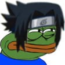

Choose the more popular Genshin Character.
Characters range from the Traveler to Shenhe.
This data is from October 2021 provided by Genshin Lab
If you know a way to get more recent data, please DM me on twitter.
Note: the recent 5-star character would be Kokomi, but Shenhe, Gorou, Itto, etc. are on this list because of 